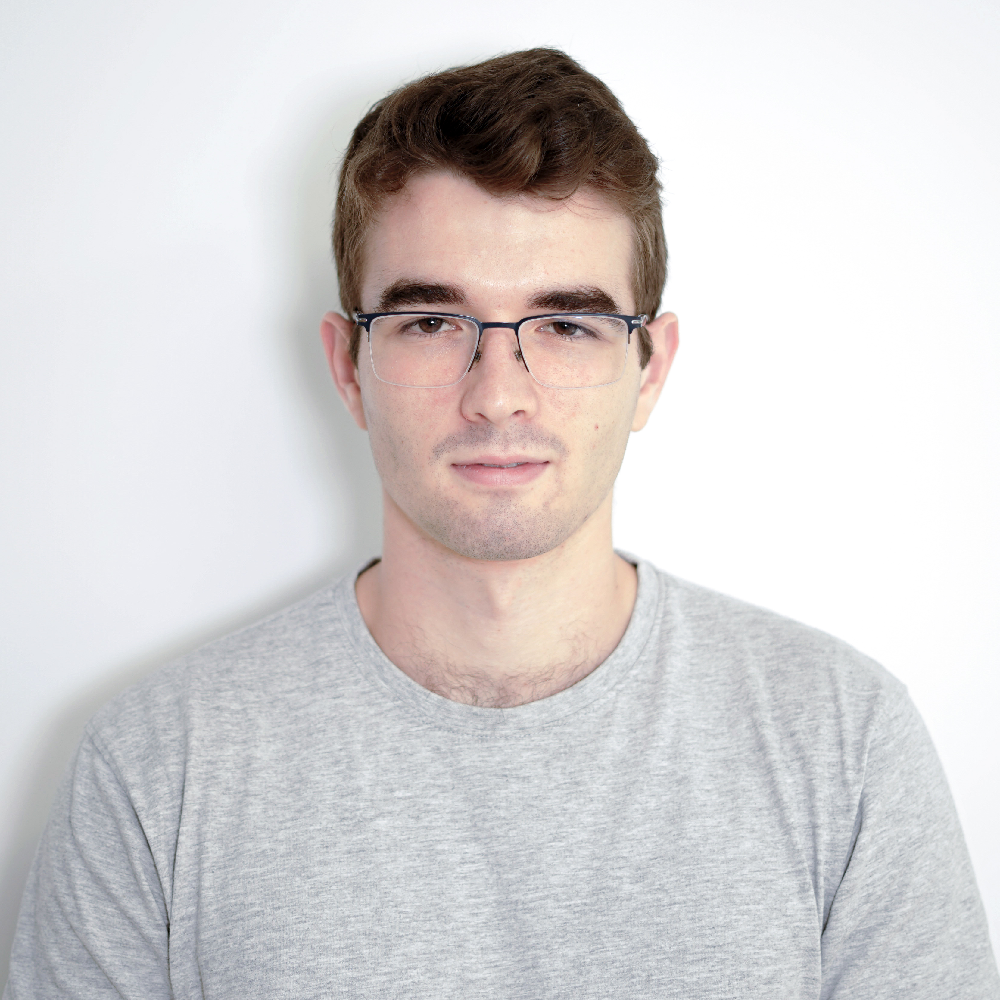
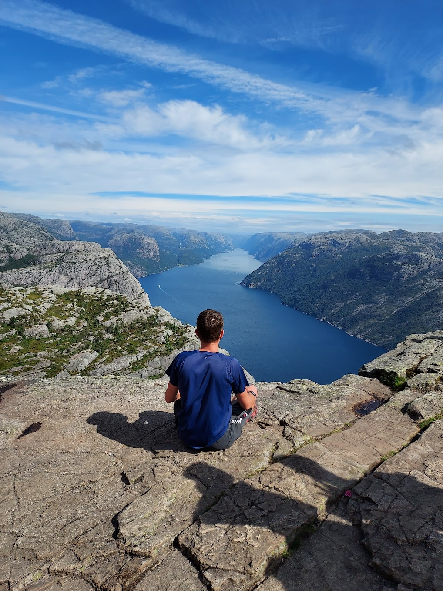

Right Now
- Learning
- Optics and orbital geometry for space surveillance
- Building
- UDMT's central control board (KiCad + ESP32)
- Reading
- Fake History, by Jo Hedwig Teeuwisse (in German)
I'm studying a double degree in Industrial Electronics & Automation and Computer Engineering at the University of Deusto. I love embedded systems, C/C++ and automation, and I'm passionate about space technology. I work on space situational awareness at Satlantis and lead electronics & software at UDMT, our electric racing motorbike team.

Firmware in C/C++ for ESP32, STM32 and Arduino: telemetry over CAN and MQTT, sensor reading and the state logic that decides how a vehicle behaves.
Schematics and PCBs in KiCad and EasyEDA, battery systems for an electric motorbike and industrial automation with Siemens PLCs.
Python tools, Java and Spring Boot back-ends, time-series data with InfluxDB and Grafana, all running on Linux systems I set up from scratch.
I've always wanted to understand how things work all the way down, from the circuit to the operating system. That curiosity took me to a double degree that mixes electronics and computer science, and in 2023 to UDMT, the University of Deusto Moto Team, where we design and build an electric racing motorbike for the international MotoStudent competition under strict technical rules and tight deadlines. There I've worked on the battery system, the telemetry and the rider's display, and I'm now designing the bike's central PCB. Outside the team I build robots, write my own tools, play with bootloaders and kernels and practise cybersecurity on Hack The Box. I am so passionate about everything related to technology that it is really hard for me to choose a specific career path, but I know I'm on the right track, I like the space sector, the challenges of embedded systems and the satisfaction of seeing a project through from the first line of code to the final product.

Started my degree Double degree in Industrial Electronics & Automation + Computer Engineering at the University of Deusto.
Joined UDMT Electronics & software area of the team competing in MotoStudent.
Joined Satlantis Electronics & Software department, working on space situational awareness.
Graduation Expected end of the double degree.
When I'm away from the soldering iron and the terminal, I'm usually on my mountain bike, at the gym or reading about economics, geopolitics and philosophy, with metal playing in the background.